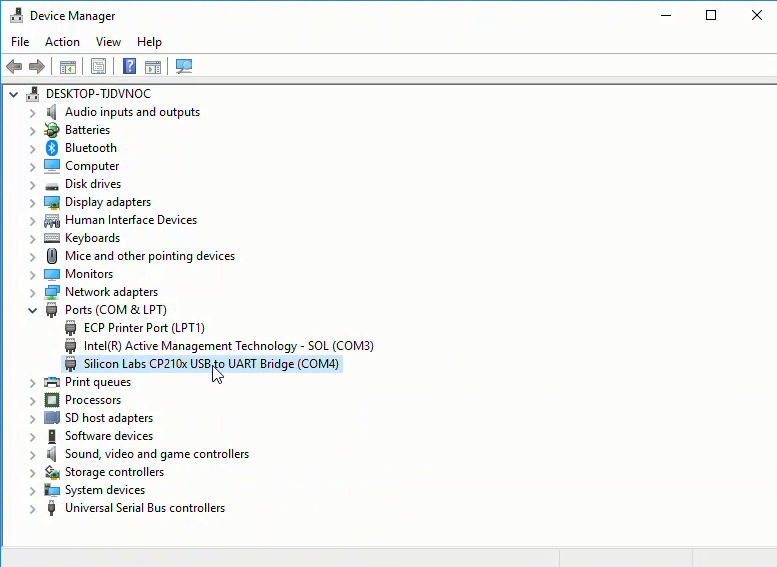
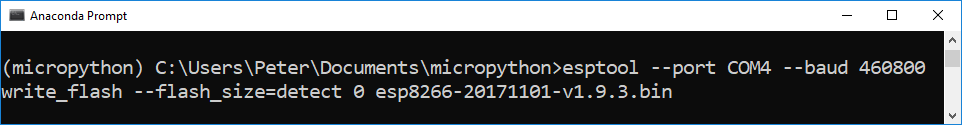

This is the sixth part of a series of posts about building an Internet of Things (IoT) server with flask, Python and ESP8266 microcontrollers. In this post, we'll add some code to our ESP8266-based weather stations. The code we upload to the ESP8266 microcontrollers programs the WiFi weather stations to measure the temperature. After the ESP8266-based weather stations measure the temperature, the microcontroller executes a GET request to our flask IoT server web API.
- Introduction
- Hardware Setup
- Upload firmware
- Download the latest Micropython firmware .bin file
- Install the SiLabs driver for the Adafruit Feather Huzzah ESP8266
- Connect the Adafruit Feather Huzzah ESP8266 board to the laptop
- Determine which serial port the Feather Huzzah is connected to
- Run esptool to upload the .bin file to the Feather Huzzah
- Construct .py files
- Upload .py files
- Test ESP8266-based weather stations
- Upload main.py
- Summary
Introduction
In the last post, we added a database to our flask IoT server. Each time our flask IoT server web API is hit with a valid URL, the data contained in the URL is saved as a record in a sqlite3 database on the server. Each time we browse to the main page of the flask IoT server site, we see the most recent temperature posted. The posted temperature is pulled from the sqlite3 database.
In this post, we are going to create a couple new .py files and upload the .py files to the ESP8266-based WiFi weather stations. These .py files enable the ESP8266-based WiFi weather stations to measure the temperature, then post the temperature to our flask IoT server.
Hardware Setup
Before we upload any new code to the ESP8266-based weather stations, let's review the hardware setup. Below is a schematic of the ESP8266-based weather stations. The schematic shows an ESP8266 microcontroller (an Adafruit Feather Huzzah ESP8266) connected to a temperature sensor (MCP9808) with jumper wires.
Upload firmware
If you are following along with this series, you might remember the ESP8266-based WiFi weather station hardware and software setup in the first post of the series. In case the Feather Huzzah ESP8266 microcontroller doesn't have an up-to-date version of Micropython on it, below are instructions detailing how to upload the Micropython firmware to the board.
Download the latest Micropython firmware .bin file
Go to GitHub and download the latest .bin firmware file. Move the .bin firmware file to a new micropython directory. The .bin firmware file is the version of Micropython that runs on the Adafruit Feather Huzzah ESP8266.

Install the SiLabs driver for the Adafruit Feather Huzzah ESP8266
Before we can connect the Adafruit Feather Huzzah to the computer, we need a specific driver installed. For my Windows 10 laptop to see the Adafruit Feather Huzzah board, the CP210x USB to UART Bridge VCP driver needs to be downloaded from SiLabs and installed.

Connect the Adafruit Feather Huzzah ESP8266 board to the laptop
Use a micro-USB cable (the same kind of cable that charges many mobile phones) to connect the Feather Huzzah to the computer. Make sure that the micro-USB cable is a full USB data cable and not just a simple power cable. I had trouble getting the Feather Huzzah to work, and it turned out the reason was my micro-USB cable was only a charging cable. Charge-only cables cannot transfer data.
Determine which serial port the Feather Huzzah is connected to
Use Windows Device Manager to determine which serial port the Feather Huzzah board is connected to. We'll need the serial port as one of the parameters when we upload the .bin firmware file on the board. Look for something like Silicon Labs CP210x USB to UART Bridge (COM4) in the Ports (COM & LPT) menu. The USB to UART bridge is the Feather Huzzah ESP8266 microcontroller board. CP210x refers to the chip that handles serial communication on the Feather Huzzah, not the ESP8266 chip itself. Make a note of the number after (COM ). It often comes up as (COM4) but it may be different on your computer.


Run esptool to upload the .bin file to the Feather Huzzah
On a local computer (not the server), open the Anaconda Prompt or a terminal and cd into the directory with the .bin firmware file. The .bin firmware file is called something like esp8266-20171101-v1.9.3.bin. Create and activate a new conda virtual environment and install esptool into the environment.
> conda create -n micropython python=3.7
> conda activate micropython
> (micropython) pip install esptool
Before we write the .bin firmware file to the ESP8266, we'll first erase the flash memory on the little microcontroller using the esptool erase_flash command. Make sure to specify the --port you found in the Windows Device Manager. In my case the port was COM4.
> (micropython) esptool --port COM4 erase_flash
Now it's time to write the .bin firmware file to the flash memory on the ESP8266 board using the esptool write_flash command. Make sure to use the exact .bin firmware file name. The .bin firmare filename is easy to mistype. --port has to be set as the port you found in the Windows Device Manager. ---baud is the baud rate (upload speed). I found that --baud 460800 worked, but you could also specify --baud 115200, which is slower. The upload time was a matter of seconds with either baud rate. The 0 after --flash_size=detect means we want the firmware written at the start of the flash memory (the 0th position) on the board.
An issue I ran into was that I tried to use the command esptool.py instead of esptool as shown on the Micropython docs. The documentation for Micropython on the ESP8266 specifies the command esptool.py (including the .py file extension). The command esptool.py did work on my Windows 10 machine. Omitting the .py file extension, and running esptool worked instead.
> (micropython) esptool --port COM4 --baud 460800 write_flash --flash_size=detect 0 esp8266-20171101-v1.9.3.bin

Construct .py files
Now that Micropython is loaded on the ESP8266 microcontroller, we'll construct a couple of .py files to load onto the board.
The first file is wifitools.py. This module contains a couple of helper functions that allow the ESP8266 to connect to a WiFi network and make GET requests.
# wifitools.py
import urequests
#https://docs.micropython.org/en/v1.8.6/esp8266/esp8266/tutorial/network_basics.html
def connect(SSID,password):
import network
sta_if = network.WLAN(network.STA_IF)
if not sta_if.isconnected():
print('connecting to network...')
sta_if.active(True)
sta_if.connect(SSID, password)
while not sta_if.isconnected():
pass
print('network config:', sta_if.ifconfig())
def getmac():
import network
import ubinascii
return ubinascii.hexlify(network.WLAN().config('mac'),':').decode()
def flaskiot_post(API_key,mac_address,field, data):
if not isinstance(data, str):
data = str(data)
if not isinstance(field, str):
field = str(field)
# https://freetemp.org/update/API_key=ASCIISTR/mac=6c:rf:7f:2b:0e:g8/field=1/data=72.3
base_url = 'https://freetemp.org/update'
api_key_url = '/API_key=' + API_key
mac_url = '/mac=' + mac_address
field_url = '/field=' + field
data_url = '/data=' + str(data)
url = base_url + api_key_url + mac_url + field_url + data_url
print(url)
response = urequests.get(url)
print(response.text)
The second file MCP9808.py, contains a function to read the temperature off of the MCP9808 temperature sensor.
# MCP9808.py
# Functions for the MCP9808 temperature sensor
# https://learn.adafruit.com/micropython-hardware-i2c-devices/i2c-master
def readtemp():
import machine
i2c = machine.I2C(scl=machine.Pin(5), sda=machine.Pin(4))
byte_data = bytearray(2)
i2c.readfrom_mem_into(24, 5, byte_data)
value = byte_data[0] << 8 | byte_data[1]
temp = (value & 0xFFF) / 16.0
if value & 0x1000:
temp -= 256.0
return temp
The third file, config.py, contains the API key and mac address the ESP8266 uses in the GET requests to send a valid URL to our flask IoT server. config.py also contains the SSID and WiFi password of the wireless network. The constants API_key and mac should be set to the values used in the server script flaskapp.py. Make sure to add this file to .gitignore to keep it out of version control.
# config.py
# API keys, passwords, mac address
# keep out of version control
#api_key = config.API_KEY
API_KEY = 'TGS894F'
#ssid = config.SSID
SSID = 'My WiFi Network'
#password = config.WIFI_PASSWORD
WIFI_PASSWORD = 'my_wifi_password'
MAC_ADDRESS = '6c:ef:7r:3b:9d:e8'
The fourth file - run.py, is a script with one primary function. The function programs the ESP8266 to:
- connect to the WiFi network
- read the temperature off of the MCP9808 temperature sensor
- try to post the temperature to our flask IoT server
- wait 1 minute
# run.py
# ESP8266 Feather Huzzah Weather Station, connected to flask IoT server
import wifitools
import MCP9808
import time
import config
def main():
ssid = config.SSID
password = config.WIFI_PASSWORD
api_key = config.API_KEY
mac_address = config.MAC_ADDRESS
field = '1'
wifitools.connect(ssid,password)
time.sleep(5)
for i in range(60*8):
data = MCP9808.readtemp()
try:
wifitools.flaskiot_post(api_key,mac_address,field,data)
except:
pass
time.sleep(60)
Upload .py files
We'll use a tool called ampy to upload the .py files to the board. Make sure ampy is installed in the virtual environment you're using.
> conda activate micropython
> (micropython) pip install ampy
To upload the .py files, make sure the board is plugged into the computer with a USB data cable and use the ampy put command. Note the --port is specified.
> (micropython)$ ampy --port COM4 put MCP9808.py
> (micropython)$ ampy --port COM4 put wifitools.py
> (micropython)$ ampy --port COM4 put config.py
> (micropython)$ ampy --port COM4 put run.py
> (micropython)$ ampy --port COM4 ls
> boot.py
wifitools.py
MCP9808.py
config.py
run.py
Test ESP8266-based weather stations
Connect the ESP8266 to the local computer with a micro-USB cable. Use PuTTY to open up the Micropython REPL and try to run the main script in run.py
>>> import run
>>> run.main()
The temperature is measured once a minute and posted to our flask IoT server. Open up a web browser to the server's main page and view the most recent data point.
https://mydomain.com
Upload main.py
Now that we know our ESP8266-based WiFi weather stations are working correctly, we'll upload a main.py file to the board and start recording temperatures and sending the temperature to our flask IoT server web API.
The main.py script runs automatically when the ESP8266 is powered up. The simple script contains an import and a line of code to run the main() function in run.py.
# main.py
# runs after boot.py
import run
try:
run.main()
except:
print("main() function in run.py could not be executed")
After the main.py script is constructed, upload it onto the ESP8266 with ampy.
> (micropython) ampy --port COM4 put main.py
> (micropython) ampy --port COM4 ls
wifitools.py
MCP9808.py
config.py
main.py
run.py
Now for the big payoff. Plug the ESP8266 into power, but disconnected from the local computer. Go to the main page on the flask-IoT server and see the temperature measured once a minute.
https:mydomain.com
Summary
It works! We have a working Internet of Things (IoT) server that has a working web API that ESP8266-based WiFi weather stations can post to. Building the flask IoT server was a big project. It is great to have a set of WiFi weather stations that post the temperature to a server. I can view the temperature on my phone from anywhere with a cell phone connection. The ESP8266-based WiFi weather stations can be plugged in anywhere with power (or run on a battery) within my WiFi network. Using two of the stations, I can see the temperature outside the house and the temperature inside the house from anywhere.